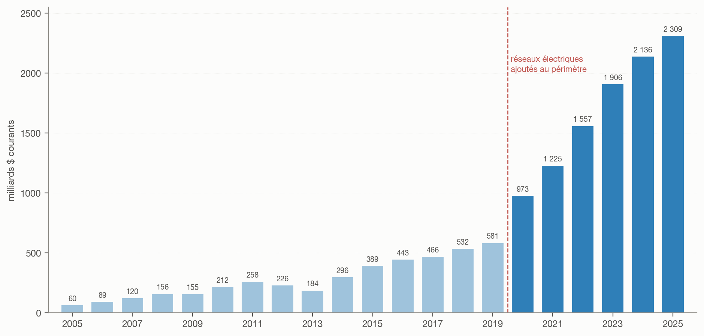
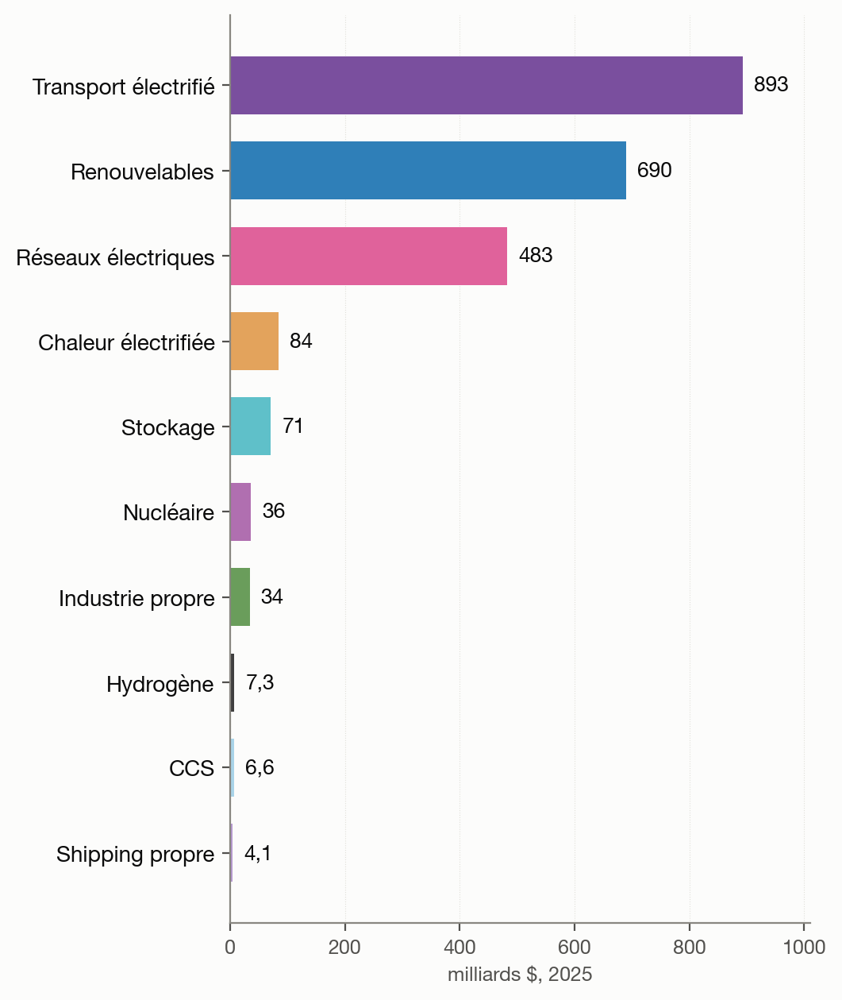
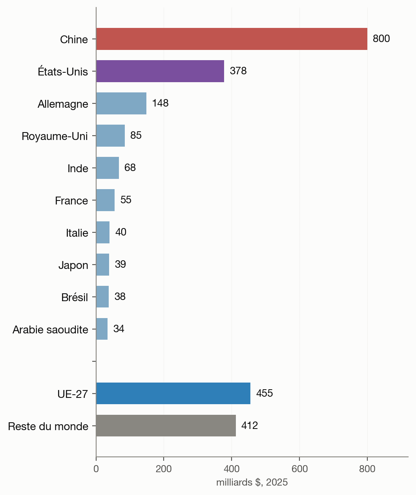
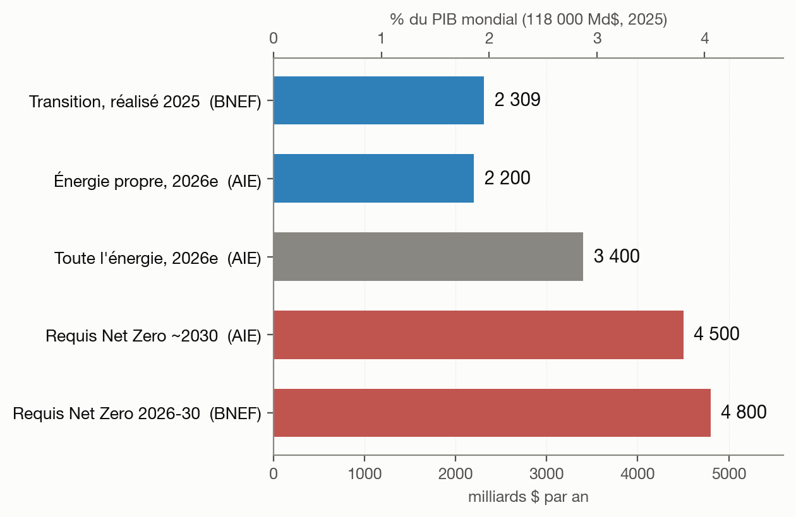

Investir dans la transition énergétique : combien, où, et combien il en faudrait
Combien le monde investit chaque année dans la transition (2 309 milliards de dollars en 2025 selon BloombergNEF), dans quels secteurs et quels pays, et l'écart avec ce qu'il faudrait. Quatre figures refaites à partir des chiffres publiés.
Cette note est le compagnon du thème
Economie/Investissement_transition, qui a refait à partir
des chiffres publiés les graphiques d’une diapositive jusque-là faite de
captures du PDF de BloombergNEF (BNEF) — non reproductibles et, faute de
licence, non réutilisables. Les chiffres sont dans
donnees_maj_2026.md, les rapports dans
bibliographie/, et les quatre figures sortent d’un seul
script, figures_investissement.py. Les chiffres clés ont
été relus dans les PDF le 27 septembre 2026.
1. En cinq phrases
- En 2025, 2 309 milliards de dollars ont été investis dans la transition énergétique selon BNEF (+8,1 %), et la croissance ralentit : 27 % en 2021, premier taux à un seul chiffre depuis 2019.
- Le transport électrifié est devenu le premier poste (893 Md$), devant les renouvelables (690 Md$, en baisse de 9,5 %) et les réseaux électriques (483 Md$, +17 %).
- La Chine reste le premier investisseur (800 Md$, un tiers du total) mais recule pour la première fois depuis 2013 ; l’Union européenne (455 Md$, +18 %) fait l’essentiel de la hausse mondiale.
- Le saut de 2019 à 2020 (581 → 973 Md$) est un changement de périmètre — les réseaux électriques entrent dans la série cette année-là —, pas une accélération.
- Pour une trajectoire de neutralité, il faudrait environ doubler : 4,8 T$ par an sur 2026-2030 selon BNEF, 4,5 T$ au début des années 2030 selon l’AIE.
2. La série et sa rupture

BNEF, Energy Transition Investment Trends 2026, en milliards de dollars courants :
| 2005 | 2010 | 2015 | 2019 | 2020 | 2021 | 2022 | 2023 | 2024 | 2025 |
|---|---|---|---|---|---|---|---|---|---|
| 60 | 212 | 389 | 581 | 973 | 1 225 | 1 557 | 1 906 | 2 136 | 2 309 |
Deux ruptures, à dire en cours. Le nucléaire n’entre dans le périmètre qu’en 2015, les réseaux électriques qu’en 2020 : la série double presque en 2020 sans que le monde ait investi deux fois plus. La figure marque cette rupture ; la lire comme une accélération est l’erreur qu’elle doit empêcher.
La série a été rebasée en 2026. L’édition 2025 donnait 2 083 Md$ pour 2024 ; l’édition 2026 révise ce même 2024 à 2 136. Ne jamais juxtaposer deux éditions.
3. Où va l’argent en 2025

| Secteur | Md$ 2025 | Évolution |
|---|---|---|
| Transport électrifié (véhicules et recharge) | 893 | +21 % |
| Énergies renouvelables | 690 | −9,5 % (réforme du marché électrique chinois) |
| Réseaux électriques | 483 | +17 % |
| Chaleur électrifiée | 84 | |
| Stockage | 71 | |
| Nucléaire | 36 | |
| Industrie propre | 34 | |
| Hydrogène | 7,3 | |
| Captage et stockage du CO₂ | 6,6 | |
| Transport maritime propre | 4,1 |
Les trois premiers postes font à eux seuls plus de 2 000 Md$. L’hydrogène et le captage du CO₂, très présents dans le débat public, pèsent ensemble moins de 1 % du total.
Pour ordre de grandeur, BNEF estime l’investissement dans les centres de données à « environ un demi-billion de dollars » en 2025 (p. 3) : plus que le solaire, moins que le transport électrifié. Ce n’est pas l’un des dix secteurs de la série.

Par économie : Chine 800 Md$ (−4 %, 4 % de son PIB), UE-27 455 Md$ (+18 %), États-Unis 378 Md$ (+3,5 %), puis le Royaume-Uni (85), l’Inde (68), le Japon (39), le Brésil (38) et l’Arabie saoudite (34, +70 %) ; dans l’UE, l’Allemagne (148), la France (55) et l’Italie (40). États-Unis, UE et Royaume-Uni réunis (918 Md$) dépassent la Chine.
4. Deux séries, deux périmètres
L’AIE (World Energy Investment 2026) compte autrement, en dollars constants, sur un périmètre plus large :
| AIE, Md$ | 2025 | 2026e |
|---|---|---|
| Toute l’énergie | 3 300 | 3 400 |
| dont énergie propre | ~2 200 | ~2 200 |
| dont fossiles | ~1 100 | ~1 200 |
| Réseaux | ~450 | ~550 |
L’énergie propre selon l’AIE (2 200 Md$) et la transition selon BNEF (2 309 Md$) sont du même ordre, mais ne s’additionnent ni ne se soustraient : les périmètres diffèrent (l’AIE compte l’efficacité, BNEF le transport électrifié à l’achat). Rapportée au PIB mondial (118 000 Md$ en 2025, Banque mondiale), toute l’énergie pèse environ 2,9 % du PIB, dont 65 % pour l’énergie propre.
À noter dans la même publication : l’investissement dans l’offre de charbon atteint 180 Md$ en 2026, son plus haut depuis 2012, dont plus de 65 % en Chine.
5. Ce qu’il faudrait investir

| Besoin annuel | Md$/an | Source |
|---|---|---|
| Scénario de base (≈ 2,4 °C en 2100) | 2 900 | BNEF, moyenne 2026-2030 |
| Neutralité, BNEF (pic à 1,81 °C) | 4 800 | BNEF NEO 2026, 2026-2030 ; puis 7 700 en 2031-2035 |
| Neutralité, AIE | ≈ 4 500 | AIE, Net Zero Roadmap (2023), début des années 2030 |
| 1,5 °C, IRENA | ≈ 6 700 | IRENA, WETO 2024, périmètre plus large |
Le scénario « Net Zero » de BNEF n’est plus un scénario 1,5 °C : BNEF considère que la fenêtre est fermée, et son scénario plafonne à 1,81 °C. Le « 1 700 Md$ pour 1,5 °C » de l’ancienne diapositive ne correspond plus à aucune publication à jour.
En France, I4CE (Panorama des financements climat, édition 2025) compte 102 Md€ d’investissements climat en 2024 (−5 %), et un besoin supplémentaire de 87 Md€ par an d’ici 2030 pour la stratégie nationale bas-carbone.
6. Les chiffres répandus qui se révèlent faux, ou mal posés
- « L’investissement dans la transition a bondi de 67 % en 2020. » C’est l’entrée des réseaux dans la série.
- Comparer 2 083 Md$ (2024, édition 2025) et 2 309 Md$ (2025, édition 2026) : +11 % au lieu de +8,1 %, parce que la série a été révisée entre les deux.
- « Il faut 1 700 Md$ par an pour 1,5 °C. » Chiffre périmé ; les ordres de grandeur actuels sont de 4 500 à 6 700 Md$, et aucun ne porte plus sur 1,5 °C chez BNEF.
- Additionner BNEF et AIE, ou BNEF et les flux financiers du même rapport (1 226 Md$ de dette de transition, 77 Md$ de capital-risque) : ce sont des mesures du même argent vu d’un autre côté.
7. Ce qui n’est pas établi, et les écarts aux conventions
- Les valeurs 2005-2023 de la série ont été lues sur le graphique du résumé BNEF, pas dans un tableau : précision de l’ordre de la dizaine de milliards.
- La part de l’investissement dans le PIB par pays n’est publiée que pour la Chine (4 %) ; les autres points du graphique BNEF ne sont pas étiquetés, et la figure ne les invente pas.
- Le besoin de l’AIE date de 2023 : le World Energy Investment 2026 ne l’a pas mis à jour.
- Les figures sont en français, contre la convention
du dépôt (anglais par défaut, français en supplément
_fr), et le dossier n’a pas debibliographie/README.mddonnant pages et tableaux. - Droits : le résumé BNEF est en accès libre mais sans licence de réutilisation ; les figures refaites portent la mention « Données : BloombergNEF, Energy Transition Investment Trends 2026 ». Les figures de l’AIE sont sous CC BY 4.0.
8. Reproduire
python3 figures_investissement.py depuis le dossier du
thème, sans argument : quatre figures dans output/, en PDF,
SVG, PNG et PNG à fond transparent.
9. Sources
- BloombergNEF (27 janvier 2026), Energy Transition Investment Trends 2026, résumé public, p. 3 (chiffres clés) et p. 10 (série, rupture de périmètre 2020).
- BloombergNEF (mai 2026), New Energy Outlook 2026, résumé, p. 4 et p. 15 (4,8 T$/an, 1,81 °C).
- AIE (28 mai 2026), World Energy Investment 2026, rapport et présentation de lancement.
- AIE (septembre 2023), Net Zero Roadmap ; IRENA (2024), World Energy Transitions Outlook.
- I4CE (juillet 2025), Panorama des financements climat, synthèse.
- Banque mondiale — PIB mondial 2025.
Télécharger la version PDF (les liens y restent actifs).